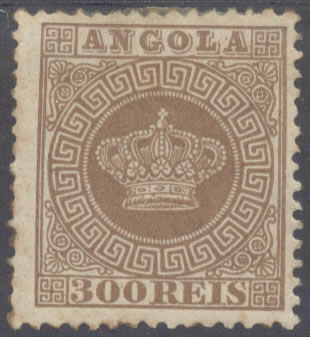
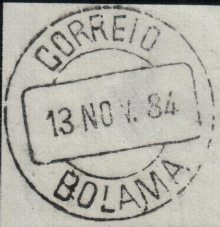

(Normal issue, here from Macao and Angola issue, slightly different design)
Return To Catalogue - Portugal
Note: on my website many of the
pictures can not be seen! They are of course present in the
catalogue;
contact me if you want to purchase the catalogue.
Many Portuguese colonies issued stamps in the Crown design; Angola, Cape Verde, Macao, Mozambique, Portuguese Guinea (overprinted on Cape Verde), Portuguese India (two series in different currency), St Thomas and Prince and Timor (overprinted on Macao). They exists with perforation 12 1/2 or 13 1/2. Angola has 'ANGOLA' on top, all other countries have 'CORREIO' on top and the country name written in the circle:

(Normal issue, here from Macao and Angola issue, slightly
different design)
1870 issue:


5 r black 10 r yellow 20 r brown 25 r red 40 r blue 50 r green 100 r lilac 200 r orange 300 r brown Issued from 1881 to 1885

10 r green 20 r red 25 r lilac 40 r yellow 50 r blue 80 r grey (not issued for all colonies)


(Overprints of Guinea and Timor)


(Portuguese India, new currency)
As far as I know, reprints were made of all the above countries for the Crown issue. The paper seems to be different (whiter?).

(Reprints of St. Thomas and Prince made in 1885)

(A 'reprint' of a non-existing 20 r red stamp of Portuguese
India)
Most forgeries have the typical Spiro cancel probably never used in any Portuguese colony, (an easy way to recognize them), examples of Spiro forgeries:


(Inner line above value label not continuous, 'G' has a tail in
the Angola forgeries)
The inner line above the value label is not continued to the right outer frame line in the Spiro forgeries. The pearls in the crown are difficult to count. In the Angola forgeries, the 'G' of 'ANGOLA' has a tail.
Fournier made forgeries of these stamps. He offers them in his 1914 pricelist: the stamps of the 1877 issue (9 values) are offered for 2 Swiss Francs and the others (5 values) for 1 Swiss Franc. The misprint 40 r blue attached to a Mozambique stamps was offered for 2.50 Swiss Francs. The same misprint in yellow was offered for the same price. Some of his forgeries can be found with the word 'FAUX' overprinted on it, they are from the Fournier Album of Philatelic Forgeries that was made by the Philatelic Society of Geneva after Fournier died.
They can be recognized by the following characteristics; with thanks to Bill Claghorn for the images; (Forgeries idenfication site of Bill Claghorn: http://geocities.com/claghorn1p/):
(Genuine left, forgery right)
1) The ornaments in the upper right corner are not perfect as in the genuine stamps.
(Genuine left, forgery right)
2) The large circle with 'CABO VERDE' is slightly to big for the frame. In the genuine stamps this frame doesn't touch or just touches the line below 'CORREOS'.
(Genuine left, forgery right)
3) The cross on top of the crown has a white dot in the center. In the Fournier forgeries there is no dot at all in the center, but it has the colour of the stamp.
(Genuine left, forgery right)
4) I have also noticed that the ornament in the left upper corner is almost touching the frame in the Fournier forgeries. In the genuine stamps it is further away from the frame.
5) The cancels always seem to be the same (one or two per country, with the date always fixed).
Examples:
On Angola: 'CORREIO ... JASSANG... 23 NOV 75'
or 'CORREIO DE LOANDA 15/10 1881'
On Cape Verde: 'CORREIO DE PORTO GRANDE 6 3 1881'
or 'CORREIO DE PRAIA 13/12 1878'
On Macao: 'CORREIO 10 JAN. 87 MACAU'
or 'DIRECCAO DO CORREIO 14 JUN 84 DE MACAU'
On Mozambique: 'CORREIO DE BEIRA 6 10 1878 (MOCAMBIQUE)'
or 'CORREIO DE MOCAMBIQUE 1 9 1885'
On Portuguese Guinea: 'CORREIO 13 NOV. 84 BOLAMA'
or 'CORREIO DE BISSAU 7/12 1881'
On Portuguese India: 'CORREIO DE DAMAO 6 3 1885'
or 'DAMAO 2 NOV. 82'
On St.Thomas and Prince: 'SAO THOME 20/7 1875'
or '* CORREIO * SAO ANTONIO 16 OUT 84'
or 'ST.THOMAS 2/12 1916'
On Timor: 'CORREIO 12 NOV. 85 DILLY'

(Pictures of the forged Fournier cancels)
In the above forgery, the ornaments in the upper right and lower left corner are inverted. I have only seen one copy (the 25 r red of Angola) of this forgery.

In the above forgery there are much less pearls in the circle surrounding the crown than in the genuine stamps. I have only seen the above 10 r Macao forgery.
This forgery of the 5 r value of St. Thomas and Prince has the word 'CORREIO' different from the genuine stamps. The base of the crown seems smaller and more rounded. Also note the appearance of guide lines outside the design of the stamp.

Another forgery of Mozambique with the number of pearls in the
crown different from the genuine stamps. The 'S' of 'REIS' is
also different.
'Proof' of a Sperati forgery of the 20 R Mozambique stamp


{kind=link}
{kind=link}
{kind=link}
{kind=link}